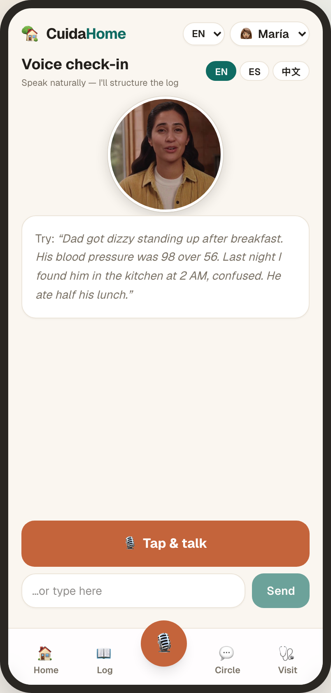

Fellowship
University of California, Los Angeles (UCLA)
Internal Medicine & Geriatric Medicine · San Jose, CA
Board-certified physician in Internal Medicine and Geriatric Medicine, focused on dementia care and team-based, whole-person support for older adults and their caregivers.
About
I'm an Internal Medicine and Geriatric Medicine physician, trained at Cedars-Sinai Medical Center and UCLA, currently practicing at On Lok — a nonprofit that pioneered the PACE (Program of All-Inclusive Care for the Elderly) model. My clinical focus is dementia care, working within a team-based model that supports both patients and their caregivers.
My prior experience includes six years as a home care nurse, working alongside patients and families in their own homes. That experience shaped how I practice today — an approach grounded in continuity of care and an understanding of the functional and social determinants of health outside the clinical setting.
Alongside clinical practice, I'm exploring the intersection of medicine and AI — building agentic tools that help clinicians and improve care for older adults and their caregivers.
Career
Oct 2022 – Present
On Lok · San Jose, CA
Provide comprehensive geriatric care within the PACE model at On Lok, the nonprofit that pioneered Program of All-Inclusive Care for the Elderly. Focus on dementia care through an interdisciplinary, team-based approach that supports patients and their caregivers.
Jul 2021 – Jul 2022
University of California, Los Angeles (UCLA) · Los Angeles, CA
Subspecialty fellowship training in geriatric medicine, with an emphasis on the care of older adults and complex, multi-condition management.
Jun 2018 – Jun 2021
Cedars-Sinai · Los Angeles, CA
Internal medicine residency in the primary care track, building a foundation in continuity, prevention, and whole-person care.
Dec 2008 – Aug 2014
Suburban Home Health Care Services Group · Boston, MA
Nearly six years providing home-based nursing care to patients and families in their own homes — the foundation of a care philosophy grounded in continuity and the realities of health beyond the clinic.
Training
University of California, Los Angeles (UCLA)
Cedars-Sinai
University of Massachusetts Medical School
American Board of Internal Medicine
Northeastern University
Bunker Hill Community College
Focus
Clinical focus and interests across geriatric and internal medicine — centered on older adults, dementia, and whole-person care.
Building
Beyond the clinic, I'm engaged with the emerging world of AI in medicine — exploring how agentic tools can support clinicians and improve patient care.
An AI care log that connects caregivers and clinicians
CuidaHome closes the gap between what happens at home and what the care team sees at the next visit — turning a caregiver's everyday observations into structured, clinically useful information.

Contact
For collaboration, advisory, speaking, or professional inquiries, the best way to reach me is on LinkedIn.